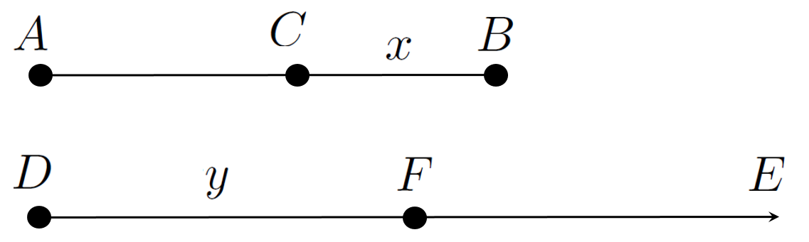

So far weve focused on the natural exponential and logarithm functions even though we started our discussion of logarithms by defining \(\log_{10}(x)\) as the inverse of the base-\(10\) exponential: \(10^x\text{.}\)
But weve seen that \(2^x\) is also an exponential, and its inverse is \(\log_2(x)\text{.}\) In fact, weve seen that for any \(a\gt 0\text{,}\)\(a\neq1\text{,}\)\(a^x\) is the base \(a\) exponential and the corresponding inverse function is called the base \(a\) logarithm, and is denoted \(\log_a(x)\text{.}\)
Problem8.12.0.1.
Why do we impose the conditions, \(a\gt 0\) and \(a\neq1\text{?}\)
Calculus is not needed for the next problem which establishes that all logarithm functions change multiplication into addition (Property 4) and exponentiation into multiplication (Property 6) as we stated (but didnt prove) earlier.
Drill8.12.0.2.
Let \(a\gt 0\text{,}\)\(a\neq1\text{,}\)\(x\gt 0,\)\(y\gt 0\) and let \(c\) be any real number.
(a)
Show that \(\log_a(xy)=\log_a(x)+\log_a(y).\)
Hint.
Consider \(a^{\log_a(x)+\log_a(y)}\) and use the properties of exponents to show that this equals \(xy.\)
(b)
Show that \(\log_a(x^c) =c \log_a(x).\)
Hint.
Consider \(a^{c\log_a(x)}\) and use the properties of exponents to show that this equals \(x^c\text{.}\)
But if there are so many different exponential and logarithm functions, dont we need differentiation rules for all of them? If so, what are the derivatives of the other exponentials and logarithms?
It is not as hard to differentiate \(y=a^x\) as you might think. Since we already know how to differentiate the natural exponential all we have to do is re-express \(y=a^x\) in terms of \(e^x\text{.}\)
Heres how to do that. Recall that from the inverse relationship between the natural exponential and the natural logarithm (Properties 1 and 2) \(a=e^{\ln(a)}\text{.}\) So we make that substitution to get
Many people simply memorize this formula and you are welcome to do that if you like. However we (the authors) prefer to emulate nature and be lazy. We find it much simpler to find the derivative of \(a^x\) by rewriting it as \(e^{x\ln(a)}\) first.
The following problem shows an alternative (and equivalent) method if you cant remember how to rewrite \(a^x\text{.}\)
Drill8.12.0.3.
Starting with \(y=a^x\text{,}\) take the natural logarithm of both sides and solve for \(\dx{y}\) to obtain the same formula as above.
Taking a logarithm of complicated formulas sometimes allows us to simplify things considerably via the properties of logarithms. It is a nice trick. Keep it in mind. Well be using it later.
Problem8.12.0.4.
Find \(\dx{y}\) and \(\dfdx{y}{x}\) for each of the following:
\(\displaystyle y=2^x\)
\(\displaystyle y=3^x\cdot3^x\)
\(\displaystyle y=x3^x\)
\(\displaystyle y=e^{5^x}\)
\(\displaystyle y=\ln\left(2^x\right)\)
\(\displaystyle y=3\cdot7^x+7\cdot3^x\)
\(\displaystyle y=2^x\cdot 3^x\)
\(\displaystyle y=\frac{2^x}{3^x}\)
\(\displaystyle y=2^x\cdot4^x\cdot8^{x^2}\)
General Logarithms.
Just as we computed the derivative of the general exponential, \(a^x\) by re-expressing it as a natural exponential, we will compute the derivative of the general logarithm, \(\log_a(x)\text{,}\) by re-expressing it as a natural logarithm. This is a bit more difficult, but only a bit.
We begin with the exponential. If \(y=\log_a(x)\) then \(a^y=x\text{.}\) Taking the natural logarithm of both sides of \(a^y=x\) and using Property 6 we have, \(y\ln(a)=\ln(x)\text{,}\) or \(y=\frac{\ln(x)}{\ln(a)}\text{.}\) Since \(y=\log_a(x)\) we have successfully re-expressed the base-\(a\) logarithm as a natural logarithm:
As with the differentiation formula for general exponential functions we (the authors) find it easier to remember this conversion than the differentiation formula. But you are welcome to memorize it if you prefer.
Problem8.12.0.5.
Compute \(\dx{y}\) and \(\dfdx{y}{x}\) for each of the following.
\(\displaystyle y=\log_2(7x)\)
\(\displaystyle y=\log_{10}(x^2+1)\)
Drill8.12.0.6.
Assume \(x\neq1, x\gt0\) and let \(y=\log_x(2)\text{.}\) Show that
where \(P\) is the sound power of the source measured in watts and \(P_0\) is the sound reference level taken to be \(1\) picowatt or \(10^{-12}\) watts.
(a)
Suppose the sound power of a speaker is \(0.0001\) watts. How many decibels does this correspond to?
(b)
Suppose that the sound power of the speaker is being raised at a rate of \(0.0001\) watts per second. How fast is the sound power level rising?
DIGRESSION: Common and Napierian Logarithms.
It is a well worn truism among research mathematicians that the first solution of a substantial problem is frequently both very hard to understand and very hard to convey to others, even to other mathematicians. We publish our solutions, in part, so that others can look at the problem, consider the approach used, and find simplifications that the original investigator missed.
This is what happened to Napier. Although his original scheme allowed him to convert multiplication to addition it was more complicated than necessary. Shortly after Napier published his work in \(1614\text{,}\)Henry Briggs16
(15611630), Professor of Geometry at Gresham College in London, visited Napier and suggested that a few simple changes to his logarithm table would make it more practical. In particular it was Briggs who suggested that since our number system is in base-\(10\text{,}\) creating a table of base-\(10\) logarithms might be more useful.
Napier had had the same idea himself, but was unable to pursue it on account of ill-health. As a result, Briggs took on the task of computing tables of base-\(10\) logarithms, collaborating with Napier until the latters death two years later. The results of their collaboration are known as the Briggsian or Common Logarithms. Common Logarithms are the base \(10\) logarithms we discussed earlier and were an important computational aid for nearly \(400\) years until the invention of modern computational technologies.
As the mathematical historian Howard Eves put it, the invention of (common) logarithms literally doubled the life of the astronomer, because they so drastically reduced the time spent doing arithmetic.
Most modern scientific calculators have both the natural and the common logarithms built in. The ln button on a calculator computes natural logarithms while the log computes common logarithms.
Problem8.12.0.8.
Use whatever technology you prefer to compute the natural logarithms of the numbers \(21.2343\) and \(5689.121343\) and their product. Confirm that \(\ln(21.2343) + \ln(5689.121343) =
\ln(21.2343\times5689.121343)\text{.}\) (If you dont like these numbers use others. We just picked these at random.)
Do the same using common logarithms.
Do the same using \(\log_5(x)\text{.}\) ( Or any other base. Again we just picked \(5\) at random.)
Example8.12.0.9.
A calculator is a useful tool, but only if the human operating it understands what to calculate, and why. Blind computation is pointless and wasteful. As powerful and convenient as our modern technology is, there is still no substitution for a deep understanding of basic principles.
For example, how many base-\(10\) digits long do you suppose the number \(2^{1234567890}\) is? You cannot solve this by punching \(2^{1234567890}\) into a calculator and counting the digits. Try it and see. If you can solve this by punching \(2^{1234567890}\) into a calculator, that just means that technology has outpaced this particular problem. In that case use a bigger exponent, say \(12345678901234567890\text{.}\)
This feels like the sort of problem a math professor might make up just for fun (though it often feels like we do it just to torment our students), but it is not. Computer programmers routinely have to allocate space in memory to hold information. If the information being held happens to be the number \(2^{1234567890}\) the programmer will need to know how much space to allocate to hold the number.
Problem8.12.0.10.
Show that if \(n\) is a positive integer and \(10^n\le\alpha\lt 10^{n+1}\) then \(\alpha\) will have \(n+1\) digits to the left of the decimal point. \\
Hint.
This is true because our number system is based on powers of ten. That is, it is based on the base \(10\) exponential.
Suppose we let \(\alpha = 2^{1234567890}\) and take the base \(10\) logarithm (common logarithm) of both sides. This gives:
Since \(10^{371641966}\le 2^{1234567890}\le 10^{371641967}\) our number, \(\alpha\text{,}\) is \(371641967\) base-\(10\) digits long. But since computer arithmetic is binary (base-\(2\)) what we really need to know how many binary digits (bits) are needed to store a given number.
Problem8.12.0.11.
How many bits are needed to allocate to store these numbers?
Find the number of binary digits needed to store the number.
(b)
Find the number of base-\(8 \) digits needed to store the number.
(c)
Find the number of base-\(10\) digits needed to store the number.
(d)
Find the number of base-\(100\) digits needed to store the number.
(e)
Find the number of base-\(9 \) digits needed to store the number.
The discussion above suggests the question: What base did Napier use when he first invented logarithms, before Briggs suggested using base-\(10\text{?}\)
Napier defined his original logarithms as follows. Consider a point \(C\) moving along line segment \(AB\) and a point \(F\) moving along an infinite ray \(DE\) as seen below.

At the beginnning both \(C\) and \(F\) are moving at the same speed, and \(F\) continues to move at that initial speed. But the speed of \(C\) is always equal to the distance from \(C\) to \(B\text{.}\) If we let \(CB=x\) and \(DF=y\text{,}\) then we define the Naperian Logarithm as
\begin{equation*}
y = \text{Nap log}(x).
\end{equation*}
Since Calculus hadnt been invented yet, Napier used Trigonometry to develop his table of logarithms. The details of those computations are not relevant for us, except that he took the length of \(AB\) to be \(10^7\text{,}\) because the best sine tables at the time were to accurate to seven decimal places.
It is not altogether clear from the description above that the Napierian logarithm actually is a logarithm, let alone what its base is. The next problem explores both of these questions.
Drill8.12.0.13.
In this problem we have suppressed the variable \(t\text{.}\)
(a)
Show that \(\dfdx{y}{t}=10^7\text{,}\) and \(y(0)=0\text{.}\)
(b)
Solve the IVP: \(\dfdx{x}{t}=-x\text{,}\)\(x(0)=10^7\text{,}\)
(c)
Use the information in parts (a) and (b) to show that
Thus the base of Napiers original logarithm was \(\frac1e\text{.}\)
END OF DIGRESSION
Logarithmic Differentiation.
Recall that in Section4.3 we observed that the Power Rule does not easily extend to \(y=x^\alpha\text{,}\) where \(\alpha\) is an irrational number. The properties of the natural exponential and the natural logarithm functions will (finally) allow us to make this extension.
Suppose \(\alpha\) is any real number. Starting with \(y=x^\alpha\) we take the logarithm of both sides, obtaining
which is the Power Rule. Since we did not constraint \(\alpha\) except to say that it is a real number the different versions of the Power Rule that we saw in Section4.3 are all special cases of (8.30).
The same trick we just used can make some differentiations much easier to do.
While we can do this using our Differentiation Rules, it will be very tedious. But nice things happen if we take the natural logarithm of both sides before we differentiate.
This looks like a lot of work when its laid out on the page but it really isnt. With practice you can differentiate an expression like \(\frac{\sqrt{x^3+2x}\cdot \tan(x)}{(x^5-7)^4}\) in your head as fast as you can write it down. Really. Even if this is not true, would you rather compute this derivative using the Quotient Rule and Product Rule?
Recall that in Problem4.3.0.14 you used the Product Rule to compute \(\dx\left[(x+1)(x+2)(x+3)\cdots(x+n)\right]\text{.}\) You should redo this problem before attempting Drill8.12.0.15.
Drill8.12.0.15.
Let \(y=(x+1)(x+2)(x+3)\cdots(x+n)\text{.}\)
(a)
Take the logarithm of both sides of this formula and use the properties of logarithms to show that for \(x\neq-1, -2, -3, \cdots, -n\)
Show that the result of part (a) is equivalent to the solution of Problem4.3.0.14.
The technique of taking the logarithm of both sides of an expression like \(y=y(x)\) and then differentiating is called Logarithmic Differentiation. It can reduce the amount of tedious computation needed considerably, so it is worth knowing how to use it.
Drill8.12.0.16.
Show that if \(y=\sqrt{e^{x^2+x}\sin(x)}\text{,}\) then
There are some situations where logarithmic differentiation is your only option. Consider something like \(y=x^x.\) Unfortunately, this is not a monomial like \(x^2\) nor is it an exponential like \(2^x\text{.}\) This is some strange combination of both and our existing rules dont directly apply. But Logarithmic Differentiation will work.
Drill8.12.0.18.
For each of the following find \(\dx{y}\text{,}\) and \(\dfdx{y}{x}\text{.}\)
(a)
\(y=x^x\)
(b)
\(y=x^{\ln(x)}\)
(c)
\(y=x^{\frac{1}{\ln(x)}}\)
(d)
\(y=(x^2+1)^{\sin(x)}\)
Finally, because weve given it a name it is easy to get the impression that Logarithmic Differentiation is a new differentiation rule, but it isnt. It is really just a trick as the next problem shows. A handy trick, to be sure, but still a trick.
Drill8.12.0.19.
Suppose we want to differentiate \(y=[\alpha(x)]^{\beta(x)}\) where \(\alpha(x)\) and \(\beta(x)\) are two differentiable functions.
(a)
Compute \(\dfdx{y}{x}\) using Logarithmic Differentiation.
(b)
Now express \(\alpha(x)\) as \(\alpha(x)=e^{\ln\left(\alpha(x)\right)}\) and compute \(\dfdx{y}{x}\) again using the ordinary rules of differentiation and show that you get the same thing as in part (a).
Drill8.12.0.20.
Suppose \(x^y=y^x\) and show that \(\dfdx{y}{x}=\frac{y-x\ln(y)}{x-y\ln(x)}\text{.}\)